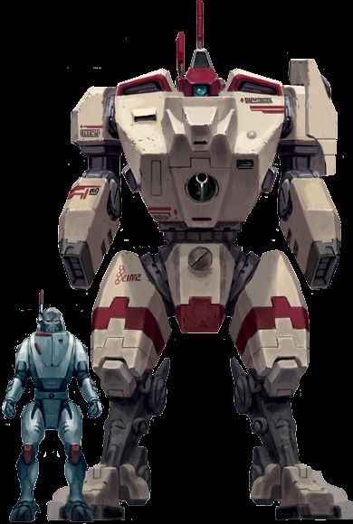
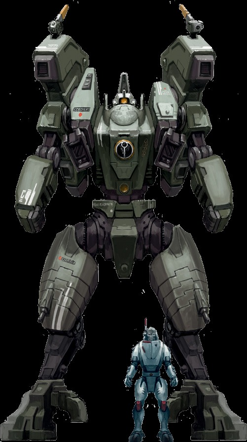

作为钛帝国使用的最大和最新部署的战斗服，XW104激流在第三次天穹扩张期间在穆古拉斯湾完成了他们那令人震惊的首次亮相。在那里，影阳指挥官派出了十二台这样的大型原型机对抗一个帝国堡垒世界，在那天他们利用他们压倒性的力量来对抗帝国数量庞大又根深蒂固的阵地。由于其实验性且有时无法预测的新星反应堆，X104能够对其从威力残暴的武器到护盾发生器再到引擎的大部分主要系统进行过载。尽管使用新星反应堆对驾驶员来说可能是危险的，但它常常能给与战士以更上上善道的名义赢得胜利所需的力量。
护甲点数：14全身
挂点：3
体型：巨大
力量：80
主要系统：黑阳滤镜、增强型动力系统、环境密封装置、喷气背包、多重追踪器
推荐挂载：重型脉冲速射炮或离子加速器，双联智能导弹系统或双联等离子步枪或双联融合炮，护盾发生器
稀有度：独一无二

每台XV104激流都内置了一台被称为新星反应堆的危险实验性驱动器。虽然这个引擎通常来说是相对安全的，但驾驶员可以将它的出力推到极限以为其武器、护盾或引擎提供更多动，冒着巨大的人身伤害风险来为上上善道效力。
新星充能：每轮一次，作为一个部分动作或反应，驾驶激流的探索者可以选择使新星反应堆过载并进行一次困难难度的(-10)科技使用检定。如果他未通过此次检定，由于反应堆剧烈过热，他将遭受1点无视护甲和坚韧加值的伤害，以及他在检定中骰出的每失败度额外1点的伤害。如果他成功了，探索者可以为激流选择以下增益之一，直到他的下一回合结束：
激流获得一个保护等级为10的力场，再加上探索者在检定中骰出的每级成功度10级（最高为95）的额外级数。该力场不会过载。
·激流的其中一件武器获得猛攻品质。
激流的其中一件武器获得过载(5)品质或将其过载品质的级别提高5。
·激流将增加1级其飞行者特质的等级，探险家在检定中骰出的每级成功度额外增加一级。
